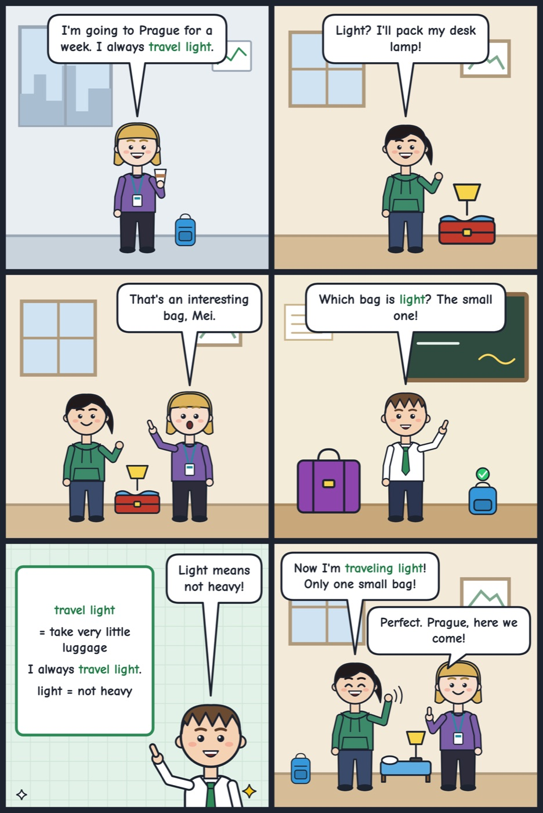

travel light
To travel with only a small amount of luggage.
I always travel light, so I only take a small bag.
Tip: Use it as a verb phrase about habits or plans: 'I try to travel light', 'We're travelling light this time'. It's about luggage, not about being in a hurry.
Hear it in conversation
Workbook
1. What does it mean?
In this conversation, what does travel light mean?
2. Fill the gap
We're flying for the weekend only, so we're going to and skip the checked bags.
3. Choose the best reply
Kofi: You've got a huge suitcase for a two-night trip!
4. Your turn: speak
Do you prefer to pack a lot or to travel light when you go on holiday? Why?
Show an example answer
I try to travel light whenever I can. It's much easier to move around airports and stations without a big suitcase, and I never worry about my bag getting lost. The only problem is that I sometimes forget something small, like a charger.
Answer key: travel light
- 1. D. To take very little luggage on a trip
- 2. travel light
- 3. A. I know, I should have travelled light, but I couldn't decide what to leave behind.
- 4. Example: I try to travel light whenever I can. It's much easier to move around airports and stations without a big suitcase, and I never worry about my bag getting lost. The only problem is that I sometimes forget something small, like a charger.
See it in a comic
